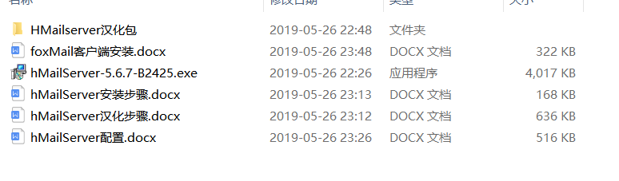
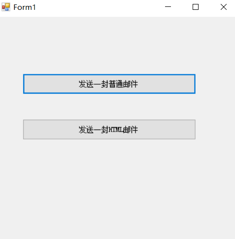
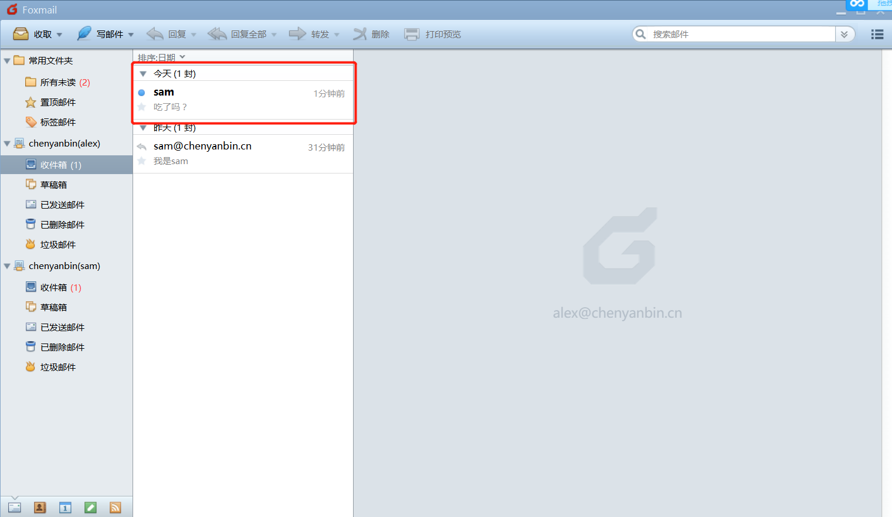
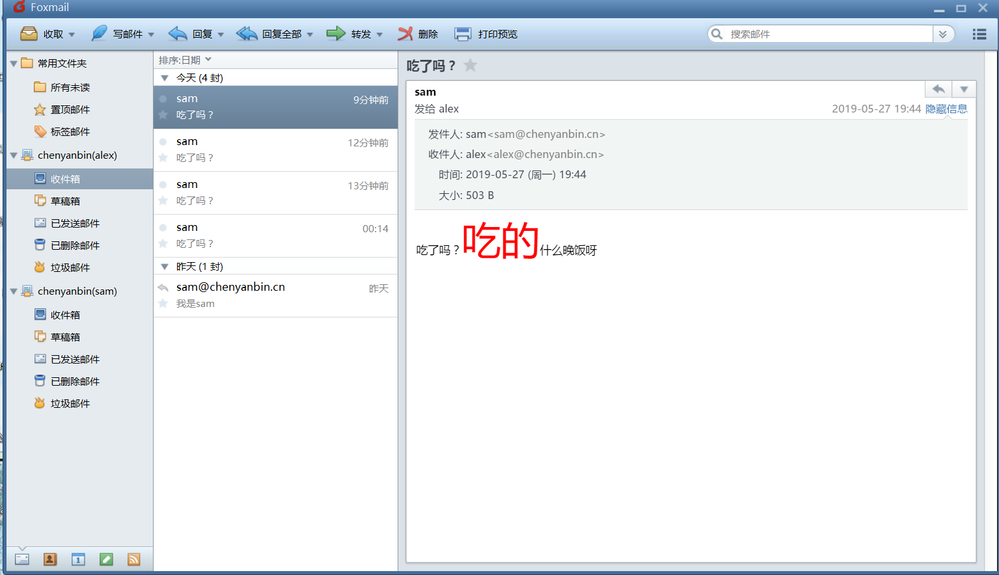

本实例需下载hMailServer与foxMail配合使用，达到接收邮件功能，下面用C#代码实现接收邮件功能。
注：安装包已经放到百度云盘上，若需要请自己下载，里面包含安装步骤与环境配置教程！

链接：https://pan.baidu.com/s/1au4mLB7Mu1DUPulLa4Uz7Q
提取码：uqcr
C#编写代码方式，实现邮件发送
主界面:

实现代码:
private void button1_Click(object sender, EventArgs e)
{
//引用命名空间:using System.Net.Mail;
//1、创建一个邮件对象
MailMessage mailObject = new MailMessage();
//设置发件人
mailObject.From = new MailAddress("sam@chenyanbin.cn"); //发件人地址
//设置收件人
mailObject.To.Add(new MailAddress("alex@chenyanbin.cn")); //收件人，可以多个
//mailObject.CC 抄送的人
//设置邮件主题
//为了防止乱码,设置主题编码格式
mailObject.SubjectEncoding = Encoding.UTF8;
mailObject.Subject = "吃了吗？";
//设置正文编码格式
mailObject.BodyEncoding = Encoding.UTF8;
mailObject.Body = "吃了吗？吃的什么晚饭";
//2.创建一个发送邮件的对象
SmtpClient smtpClient = new SmtpClient();
smtpClient.Host = "192.168.0.108"; //设置服务器ip地址
smtpClient.Port = 25; //端口号
//引入命名空间：using System.Net;
smtpClient.Credentials = new NetworkCredential("sam","1234");
//发送
smtpClient.Send(mailObject);
MessageBox.Show("ok");
}接收成功！

写一封带HTML的邮件
方式一：
private void button2_Click(object sender, EventArgs e)
{
#region 方式一
//引用命名空间:using System.Net.Mail;
//1、创建一个邮件对象
MailMessage mailObject = new MailMessage();
//设置发件人
mailObject.From = new MailAddress("sam@chenyanbin.cn"); //发件人地址
//设置收件人
mailObject.To.Add(new MailAddress("alex@chenyanbin.cn")); //收件人，可以多个
//mailObject.CC 抄送的人
//设置邮件主题
//为了防止乱码,设置主题编码格式
mailObject.SubjectEncoding = Encoding.UTF8;
mailObject.Subject = "吃了吗？";
//设置正文编码格式
//-------------------------------------
mailObject.BodyEncoding = Encoding.UTF8;
mailObject.Body = "吃了吗？<font color='red' size='7'>吃的</font>什么晚饭呀";
mailObject.IsBodyHtml = true;
//--------------------------------------
//2.创建一个发送邮件的对象
SmtpClient smtpClient = new SmtpClient();
smtpClient.Host = "192.168.0.108"; //设置服务器ip地址
smtpClient.Port = 25; //端口号
//引入命名空间：using System.Net;
smtpClient.Credentials = new NetworkCredential("sam", "1234");
//发送
smtpClient.Send(mailObject);
MessageBox.Show("ok");
#endregion
}方式二：
1 private void button2_Click(object sender, EventArgs e)
2 {
3 #region 方式二
4 //引用命名空间:using System.Net.Mail;
5 //1、创建一个邮件对象
6 MailMessage mailObject = new MailMessage();
7 //设置发件人
8 mailObject.From = new MailAddress("sam@chenyanbin.cn"); //发件人地址
9 //设置收件人
10 mailObject.To.Add(new MailAddress("alex@chenyanbin.cn")); //收件人，可以多个
11 //mailObject.CC 抄送的人
12 //设置邮件主题
13 //为了防止乱码,设置主题编码格式
14 mailObject.SubjectEncoding = Encoding.UTF8;
15 mailObject.Subject = "吃了吗？";
16 //设置正文编码格式
17 //-------------------------------------
18 mailObject.BodyEncoding = Encoding.UTF8;
19 //创建一个html正文对象
20 AlternateView htmlBody = AlternateView.CreateAlternateViewFromString("吃了吗？<font color='red' size='7'>吃的</font>什么晚饭呀", null,"text/html");
21 //把html正文对象加到邮件对象mailObject中
22 mailObject.AlternateViews.Add(htmlBody);
23 //--------------------------------------
24 //2.创建一个发送邮件的对象
25 SmtpClient smtpClient = new SmtpClient();
26 smtpClient.Host = "192.168.0.108"; //设置服务器ip地址
27 smtpClient.Port = 25; //端口号
28 //引入命名空间：using System.Net;
29 smtpClient.Credentials = new NetworkCredential("sam", "1234");
30 //发送
31 smtpClient.Send(mailObject);
32 MessageBox.Show("ok");
33 #endregion
34 }效果图：

发送带图片的邮件：
1 private void button3_Click(object sender, EventArgs e)
2 {
3 #region 方式二
4 //引用命名空间:using System.Net.Mail;
5 //1、创建一个邮件对象
6 MailMessage mailObject = new MailMessage();
7 //设置发件人
8 mailObject.From = new MailAddress("sam@chenyanbin.cn"); //发件人地址
9 //设置收件人
10 mailObject.To.Add(new MailAddress("alex@chenyanbin.cn")); //收件人，可以多个
11 //mailObject.CC 抄送的人
12 //设置邮件主题
13 //为了防止乱码,设置主题编码格式
14 mailObject.SubjectEncoding = Encoding.UTF8;
15 mailObject.Subject = "吃了吗？";
16 //设置正文编码格式
17 //-------------------------------------
18 mailObject.BodyEncoding = Encoding.UTF8;
19 //创建一个html正文对象
20 AlternateView htmlBody = AlternateView.CreateAlternateViewFromString("吃了吗？<font color='red' size='7'>吃的</font>什么晚饭呀<img src='cid:pho'/>", null, "text/html");
21 //创建一个资源，该资源与html正文中的相关内容一一对应
22 LinkedResource lr = new LinkedResource(@"01.jpg", "image/jpg");
23 lr.ContentId = "xxx";
24 //把这个资源加到html正文中
25 htmlBody.LinkedResources.Add(lr);
26 //把html正文对象加到邮件对象mailObject中
27 mailObject.AlternateViews.Add(htmlBody);
28 //--------------------------------------
29 //2.创建一个发送邮件的对象
30 SmtpClient smtpClient = new SmtpClient();
31 smtpClient.Host = "192.168.0.108"; //设置服务器ip地址
32 smtpClient.Port = 25; //端口号
33 //引入命名空间：using System.Net;
34 smtpClient.Credentials = new NetworkCredential("sam", "1234");
35 //发送
36 smtpClient.Send(mailObject);
37 MessageBox.Show("ok");
38 #endregion
39 }发送带附件的邮件：
1 private void button4_Click(object sender, EventArgs e)
2 {
3 #region 方式二
4 //引用命名空间:using System.Net.Mail;
5 //1、创建一个邮件对象
6 MailMessage mailObject = new MailMessage();
7 //设置发件人
8 mailObject.From = new MailAddress("sam@chenyanbin.cn"); //发件人地址
9 //设置收件人
10 mailObject.To.Add(new MailAddress("alex@chenyanbin.cn")); //收件人，可以多个
11 //mailObject.CC 抄送的人
12 //设置邮件主题
13 //为了防止乱码,设置主题编码格式
14 mailObject.SubjectEncoding = Encoding.UTF8;
15 mailObject.Subject = "吃了吗？";
16 //设置正文编码格式
17 //-------------------------------------
18 mailObject.BodyEncoding = Encoding.UTF8;
19 //创建一个html正文对象
20 AlternateView htmlBody = AlternateView.CreateAlternateViewFromString("吃了吗？<font color='red' size='7'>吃的</font>什么晚饭呀<img src='cid:pho'/>", null, "text/html");
21 //创建一个资源，该资源与html正文中的相关内容一一对应
22 LinkedResource lr = new LinkedResource(@"01.jpg", "image/jpg");
23 lr.ContentId = "xxx";
24 //把这个资源加到html正文中
25 htmlBody.LinkedResources.Add(lr);
26 //把html正文对象加到邮件对象mailObject中
27 mailObject.AlternateViews.Add(htmlBody);
28 //----------------------增加附件------------------
29 Attachment attach1 = new Attachment("a.jpg");
30 mailObject.Attachments.Add(attach1);
31 //----------------------增加附件------------------
32 //--------------------------------------
33 //2.创建一个发送邮件的对象
34 SmtpClient smtpClient = new SmtpClient();
35 smtpClient.Host = "192.168.0.108"; //设置服务器ip地址
36 smtpClient.Port = 25; //端口号
37 //引入命名空间：using System.Net;
38 smtpClient.Credentials = new NetworkCredential("sam", "1234");
39 //发送
40 smtpClient.Send(mailObject);
41 MessageBox.Show("ok");
42 #endregion
43 }